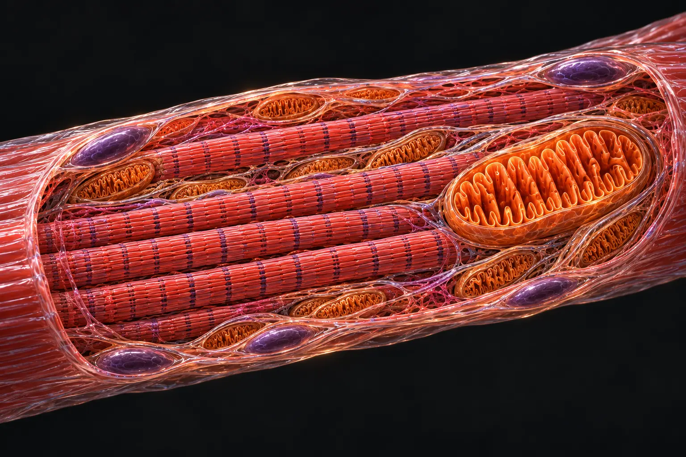

Ефект
Сила
Креатин може додатково покращувати приріст сили під час силових тренувань.
HIGH — Висока впевненістьПопередня оцінка · науковий перегляд триваєОдна з найбільш досліджених спортивних добавок — без маркетингових перебільшень.
Найкраще досліджена дія — більше сили й безжирової маси разом із силовими тренуваннями та кращі повторні короткі зусилля. Витривалість креатин не покращує, а креатинін у крові може трохи зростати без шкоди ниркам.
Різниця з плацебо в дослідженнях. Крапка — середня оцінка, смуга — 95% довірчий інтервал; кожен рядок має власну шкалу. g і SMD — стандартизований ефект: 0,2 — малий, 0,5 — помірний.
Сила й безжирова маса — дорослі з силовими тренуваннями; від 60 років — Yao 2026; витривалість — Fernández-Landa 2023; пам’ять — Xu 2024; нирки — метааналіз у «Докази й межі» твердження «Функція нирок».
У середньому побічних ефектів не більше, ніж на плацебо; іноді бувають скарги на шлунок, особливо від великих разових доз.
Оцінюємо кожне твердження, а не добавку загалом. «Докази й межі» показує конкретні результати й першоджерела.
Креатин може додатково покращувати приріст сили під час силових тренувань.
HIGH — Висока впевненістьПопередня оцінка · науковий перегляд триваєКреатин разом із силовими тренуваннями може збільшувати безжирову масу.
MODERATE — Помірна впевненістьПопередня оцінка · науковий перегляд триваєУ досліджених режимах креатин не показує переконливого погіршення функції нирок.
MODERATE — Помірна впевненістьПопередня оцінка · науковий перегляд триваєКреатин може підвищити креатинін без того, щоб це автоматично означало пошкодження нирок.
MODERATE — Помірна впевненістьПопередня оцінка · науковий перегляд триваєДоведеної послідовної переваги альтернативних форм над моногідратом немає.
LOW — Низька впевненістьПопередня оцінка · науковий перегляд триваєЗавантаження прискорює насичення м’язів креатином, але не є обов’язковим для його підвищення.
MODERATE — Помірна впевненістьПопередня оцінка · науковий перегляд триваєНемає переконливих доказів, що креатин обов'язково треба приймати саме до або саме після тренування.
VERY LOW — Дуже низька впевненістьПопередня оцінка · науковий перегляд триваєПравило «кава скасовує креатин» не підтримується достатньо узгодженими доказами.
LOW — Низька впевненістьПопередня оцінка · науковий перегляд триваєВитривалість не покращує.
LOW — Низька впевненістьПопередня оцінка · науковий перегляд триваєВід 60 років — трохи більше сили разом із тренуваннями.
MODERATE — Помірна впевненістьПопередня оцінка · науковий перегляд триваєПам’ять — трохи краще. Загальне мислення — ні.
LOW — Низька впевненістьПопередня оцінка · науковий перегляд триваєХворобу Паркінсона не сповільнює.
MODERATE — Помірна впевненістьПопередня оцінка · науковий перегляд триваєПобічних ефектів у середньому не більше, ніж на плацебо.
MODERATE — Помірна впевненістьПопередня оцінка · науковий перегляд триваєУ жінок побічних ефектів не більше.
LOW — Низька впевненістьПопередня оцінка · науковий перегляд триваєХолестерин і тригліцериди не змінює.
LOW — Низька впевненістьПопередня оцінка · науковий перегляд триваєПідліткам, вагітним і під час годування — не самостійно.
VERY LOW — Дуже низька впевненістьПопередня оцінка · науковий перегляд триваєПрактичний орієнтир для здорових дорослих
Завантаження — спосіб швидше наситити м’язові запаси. Чи впливає воно на результати тренувань, цей твердження не оцінює.
Опціонально: приблизно 0,3 г/кг/добу сумарно, розділені на кілька прийомів, протягом 5–7 днів; потім 3–5 г/добу.
Регулярність прийому має кращу практичну основу, ніж жорстке правило «тільки до» або «тільки після».
Це практичні орієнтири з позиційного документа ISSN, а не окреме твердження про ефект і не персональне призначення. За хвороб нирок, вагітності або складного лікування потрібна індивідуальна оцінка лікаря.
Практичний режим · Kreider RB et al. J Int Soc Sports Nutr. 2017. ↗
Креатинін у крові може трохи зрости, і розрахована фільтрація нирок виглядатиме гіршою — це не те саме, що шкода ниркам.
Невелике покращення пам’яті є, але загального покращення мислення метааналіз не показав, і EFSA у 2024 році не визнала такого зв’язку.
У великому дослідженні при хворобі Паркінсона креатин не сповільнив прогресування; лікування він не замінює.
Переваги інших форм над моногідратом не встановлено (див. твердження про форми).
Ефекту на витривалість у тренованих людей не виявлено; прямого «жироспалювання» дослідження не показують.
Фосфокреатин допомагає швидко ресинтезувати ATP з ADP. Фермент — креатинкіназа.

М’язове волокно · художня ілюстраціяДопомагає швидко ресинтезувати ATP з ADP.
Художня навчальна ілюстрація. Масштаб, кількість і розташування структур умовні. Позначки ATP, PCr та ферменту — точки пояснення, а не видимі молекули або виміряні концентрації.
VIS-MUSCLE-ENERGY-001 · версія 1,0 · попередній огляд 10 жовтня 2026 р.
Якісна схема, не експериментальні криві. Вертикальна позиція й відстані не означають концентрації чи тривалість. За екстремальних умов ATP також може знижуватися.
ATP постійно витрачається й ресинтезується. Фосфокреатин — швидкий буфер для змін потреби в ATP.
Кислотно-основний баланс підтримується.
Спокій не означає, що клітина перестає використовувати ATP. Креатинкіназа каталізує оборотну реакцію; напрям залежить від умов, а не лише від натискання кнопки.
Ми не обчислюємо буферну ємність, транспорт протонів, доставку кисню, температуру, pH або ферментну кінетику. До перевіреної числової моделі ці величини не додаються як «реальні» показники.
Опубліковані моделі зіставляють PCr, pH та ресинтез ATP із дослідом. Тут показано лише якісну логіку, не їхній числовий розрахунок. Механізм не є доказом приросту сили від добавки.
Гідроліз ATP до ADP і неорганічного фосфату (Pi) спряжений із роботою клітини. Креатин не створює енергію з нічого.
Навчальна якісна модель. Три стани, інші шляхи ресинтезу ATP та роль H⁺/pH пояснено, але концентрації, швидкості й pH чисельно не обчислюються. Криві та розміри символів умовні: це не вимірювання людини й не прогноз приросту сили.
VIS-ATP-PCR-001 · версія 1,1 · дата попереднього огляду 10 жовтня 2026 р.
У досліджених режимах креатин не показує переконливого погіршення функції нирок.
Підвищений креатинін після початку креатину слід інтерпретувати в контексті, а не автоматично трактувати як пошкодження нирок.
Завантаження прискорює насичення м’язів креатином, але не є обов’язковим для його підвищення.
Завантаження — спосіб швидше наситити м’язові запаси. Чи впливає воно на результати тренувань, цей твердження не оцінює.
Немає переконливих доказів, що креатин обов'язково треба приймати саме до або саме після тренування.
Регулярність прийому має кращу практичну основу, ніж жорстке правило «тільки до» або «тільки після».
Правило «кава скасовує креатин» не підтримується достатньо узгодженими доказами.
Не варто перетворювати неоднорідні дані на категоричну заборону кави з креатином.
Доведеної послідовної переваги альтернативних форм над моногідратом немає.
Теза «дорожча/нова форма краща» потребує прямого доказу; наявна база цього послідовно не показує.
Джерела пов’язані з твердженнями через окремі записи результатів досліджень. Метааналізи можуть включати ті самі первинні дослідження — кількість оглядів не дорівнює кількості незалежних доказів.
Wang H, Wang H, Xin X, Yi Z. J Int Soc Sports Nutr. 2026.
Сила верхньої частини тіла — Hedges' g (стандартизована різниця): 0,54 · ДІ: див. першоджерело
Сила нижньої частини тіла — Hedges' g (стандартизована різниця): 0,55 · ДІ: див. першоджерело
Безжирова маса — Hedges' g (стандартизована різниця): 0,3 · ДІ: див. першоджерело
Пошук до 21.04.2025; Hedges’ g; трирівневий метааналіз із випадковими ефектами.
Фінансування й конфлікти інтересів: ще не перевірено за повним текстом
Перевірка метаданих: 10 жовтня 2026 р. · SRC-000001
Desai I et al. J Strength Cond Res. 2024.
Безжирова маса — різниця середніх: 1,14 кг · 95% ДІ 0,69–1,59
Попередньо зареєстрований систематичний огляд; основний результат — безжирова маса.
Фінансування й конфлікти інтересів: ще не перевірено за повним текстом
Перевірка метаданих: 10 жовтня 2026 р. · SRC-000002
de Souza Almeida A et al. Int Urol Nephrol. 2026.
Креатинін крові — різниця середніх: 0,14 мг/дл · 95% ДІ 0,05–0,22
ШКФ, розрахована за креатиніном — різниця середніх: -10,75 мл/хв · 95% ДІ -17,48–-4,02
ШКФ, виміряна методом Cr-EDTA — різниця середніх: 5,89 мл/хв · 95% ДІ -0,3–12,08
Альбумінурія / протеїнурія — Значущої загальної різниці в альбумінурії чи протеїнурії не виявлено.
Рандомізовані дослідження до березня 2025 року; основний результат — креатинін крові; включено прямі та креатинін-залежні оцінки фільтрації.
Фінансування й конфлікти інтересів: ще не перевірено за повним текстом
Перевірка метаданих: 10 жовтня 2026 р. · SRC-000003
Kabiri Naeini E et al. BMC Nephrol. 2025.
Швидкість клубочкової фільтрації (ШКФ) — Метааналіз не виявив статистично значущої різниці ШКФ між креатином і контролем.
Основні результати — креатинін крові та ШКФ; пошук до березня 2025 року.
Фінансування й конфлікти інтересів: ще не перевірено за повним текстом
Перевірка метаданих: 10 жовтня 2026 р. · SRC-000004
Tsiaras A et al. J Ren Nutr. 2026.
Креатинін крові — різниця середніх: 0,13 мг/дл · 95% ДІ 0,07–0,18
Розрахована ШКФ — різниця середніх: -5,2 мл/хв/1,73 м² · 95% ДІ -15–4,6
Основні результати — креатинін крові, сечовина та розрахована ШКФ.
Фінансування й конфлікти інтересів: ще не перевірено за повним текстом
Перевірка метаданих: 10 жовтня 2026 р. · SRC-000005
Fazio C, Elder CL, Harris MM. J Strength Cond Res. 2022.
Перевага альтернативної форми над моногідратом — Включено 17 плацебо-контрольованих досліджень, лише 3 — прямі порівняння з моногідратом; послідовної переваги не встановлено.
Систематичний огляд за PICOS: продуктивність і склад тіла.
Фінансування й конфлікти інтересів: ще не перевірено за повним текстом
Перевірка метаданих: 10 жовтня 2026 р. · SRC-000006
Hultman E et al. J Appl Physiol. 1996.
Концентрація загального креатину в м’язах — 20 г/добу протягом 6 днів збільшували загальний креатин м’язів приблизно на 20%; 3 г/добу протягом 28 днів давали подібне, але поступове підвищення.
Порівняння режимів прийому з прямим вимірюванням загального креатину в м’язах.
Фінансування й конфлікти інтересів: ще не перевірено за повним текстом
Перевірка метаданих: 10 жовтня 2026 р. · SRC-000007
Forbes SC, Krentz JR, Candow DG. J Sports Med Phys Fitness. 2021.
Сила й товщина м’язів — Сила й товщина м’язів зростали; різниці між прийомом безпосередньо до та після тренування не виявлено.
8 тижнів; 0,1 г/кг креатину безпосередньо до або після одностороннього силового тренування.
Фінансування й конфлікти інтересів: ще не перевірено за повним текстом
Перевірка метаданих: 10 жовтня 2026 р. · SRC-000008
Elosegui S et al. Int J Sport Nutr Exerc Metab. 2022.
Взаємодія креатину та кофеїну щодо продуктивності — За тривалого сумісного прийому: 2 дослідження повідомили можливе послаблення ефекту, 3 — відсутність взаємодії, 1 — синергію; разові протоколи також різнилися.
Систематичний пошук до листопада 2021 року; разові й тривалі протоколи.
Фінансування й конфлікти інтересів: ще не перевірено за повним текстом
Перевірка метаданих: 10 жовтня 2026 р. · SRC-000009
Kreider RB et al. J Int Soc Sports Nutr. 2017.
Огляд механізму ATP–PCr і практичних режимів. Не використовується як заміна для конкретного результату оцінки.
Фінансування й конфлікти інтересів: ще не перевірено за повним текстом
Перевірка метаданих: 10 жовтня 2026 р. · SRC-000010
Korzeniewski B, Rossiter HB. J Physiol. 2015.
Динаміку PCr, pH і шляхів ресинтезу ATP використано для зіставлення математичної моделі з дослідом. Наш інтерактив лише якісно пояснює процеси: код і числові параметри цієї моделі тут не відтворені.
Фінансування й конфлікти інтересів: ще не перевірено за повним текстом
Перевірка метаданих: 10 жовтня 2026 р. · SRC-000011
Fernández-Landa J et al. · 2023
Результати на витривалість — Стандартизована різниця середніх: -0,07 · 95% ДІ -0,32–0,18
Статус публікації ще не перевірено.
Прочитано анотацію в PubMed. PROSPERO CRD42022327368; якість за шкалою PEDro.
Фінансування й конфлікти інтересів: ще не перевірено за повним текстом
Перевірка метаданих: 21 жовтня 2026 р. · SRC-000071
Yao L et al. · 2026
Сила, від 60 років — Hedges g: 0,31 · 95% ДІ 0,18–0,45
М’язова маса, від 60 років — Hedges g: 0,35 · 95% ДІ -0,09–0,78
Рухові функції, від 60 років — Hedges g: 0,47 · 95% ДІ -0,08–1,03
Статус публікації ще не перевірено.
Прочитано анотацію в PubMed. Трирівневий метааналіз, ROBUST-RCT, GRADE.
Фінансування й конфлікти інтересів: ще не перевірено за повним текстом
Перевірка метаданих: 21 жовтня 2026 р. · SRC-000072
Xu C et al. · 2024
Пам’ять — Стандартизована різниця середніх: 0,31 · 95% ДІ 0,18–0,44
Загальна когнітивна функція й виконавчі функції — Значущого покращення не виявлено; певність низька за авторами.
Статус публікації ще не перевірено.
Прочитано анотацію в PubMed. PROSPERO CRD42024533557; GRADE.
Фінансування й конфлікти інтересів: ще не перевірено за повним текстом
Перевірка метаданих: 21 жовтня 2026 р. · SRC-000073
Prokopidis K et al. · 2022
Пам’ять, здорові люди — Стандартизована різниця середніх: 0,29 · 95% ДІ 0,04–0,53
Статус публікації ще не перевірено.
Прочитано анотацію в PubMed. PROSPERO 42021281027.
Фінансування й конфлікти інтересів: ще не перевірено за повним текстом
Перевірка метаданих: 21 жовтня 2026 р. · SRC-000074
NET-PD LS-1 · 2015
Клінічне погіршення за 5 років — Сума рангів: плацебо 2360 (95% ДІ 2249–2470), креатин 2414 (2304–2524); p = 0,45. Дослідження зупинено через марність.
Статус публікації ще не перевірено.
Прочитано анотацію в PubMed. Подвійне сліпе плацебо-контрольоване РКД, зупинене через марність.
Фінансування й конфлікти інтересів: ще не перевірено за повним текстом
Перевірка метаданих: 21 жовтня 2026 р. · SRC-000075
Kreider RB et al. · 2025
Частка учасників із побічними ефектами — Креатин 4,60%, плацебо 4,21% (p = 0,828); частка досліджень із побічними ефектами 13,7% проти 13,2%.
Статус публікації ще не перевірено.
Прочитано анотацію в PubMed. Зведення звітів про побічні ефекти, бази повідомлень і аналіз соцмереж.
Фінансування й конфлікти інтересів: ще не перевірено за повним текстом
Перевірка метаданих: 21 жовтня 2026 р. · SRC-000076
de Guingand DL et al. · 2020
Будь-які побічні ефекти, жінки — Відношення ризиків: 1,24 · 95% ДІ 0,51–2,98
Шлунково-кишкові побічні ефекти, жінки — Відношення ризиків: 1,09 · 95% ДІ 0,53–2,24
Статус публікації ще не перевірено.
Прочитано анотацію в PubMed.
Фінансування й конфлікти інтересів: ще не перевірено за повним текстом
Перевірка метаданих: 21 жовтня 2026 р. · SRC-000077
Gimenez FVM et al. · 2026
ЛПНЩ — Різниця середніх: 4,08 мг/дл · 95% ДІ -2,55–10,7
Тригліцериди — Різниця середніх: 7,95 мг/дл · 95% ДІ -13,73–29,63
Статус публікації ще не перевірено.
Прочитано анотацію в PubMed. RoB 2, GRADE.
Фінансування й конфлікти інтересів: ще не перевірено за повним текстом
Перевірка метаданих: 21 жовтня 2026 р. · SRC-000078
Rubinchuk A et al. · 2026
Безпека в підлітків — У 5 дослідженнях не виявлено послідовних короткочасних сигналів шкоди для нирок, печінки чи обміну речовин; серйозних побічних ефектів не приписали креатину.
Статус публікації ще не перевірено.
Прочитано анотацію в PubMed. Пошук лише в PubMed, 2015–2025.
Фінансування й конфлікти інтересів: ще не перевірено за повним текстом
Перевірка метаданих: 21 жовтня 2026 р. · SRC-000079
Dickinson H et al. · 2014
Вагітність — Огляд експериментальних досліджень; застосування креатину у вагітних людей ще не оцінено.
Статус публікації ще не перевірено.
Прочитано анотацію в PubMed. Оглядова стаття, не систематичний огляд.
Фінансування й конфлікти інтересів: ще не перевірено за повним текстом
Перевірка метаданих: 21 жовтня 2026 р. · SRC-000080
EFSA · 2024
Регуляторна оцінка заяви про когнітивні функції — EFSA: причинно-наслідковий зв’язок між креатином і покращенням когнітивної функції встановити не можна; ЄС відхилив заяву.
Статус публікації ще не перевірено.
Висновок перевірено за офіційним повідомленням ЄС (AGRINFO) про відхилення заяви; повний текст висновку EFSA не відкривали.
Фінансування й конфлікти інтересів: ще не перевірено за повним текстом
Перевірка метаданих: 21 жовтня 2026 р. · SRC-000081
Отримуємо назви, авторів, роки та PMID безпосередньо з PubMed. Публікації з'являються тут за запитом; це не автоматичний доказ ефективності.
Освітній матеріал, не діагностика й не персональна медична рекомендація.
← На головнуМатеріал освітній і не є персональною медичною рекомендацією.
Про проєкт